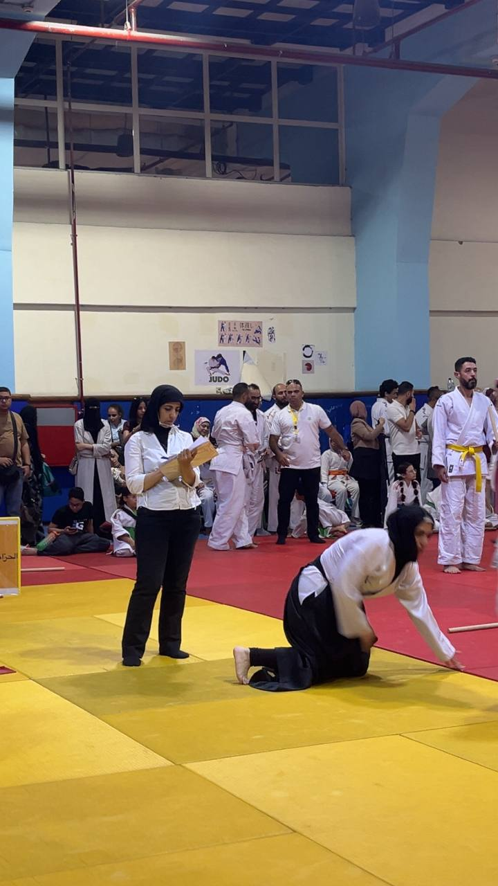
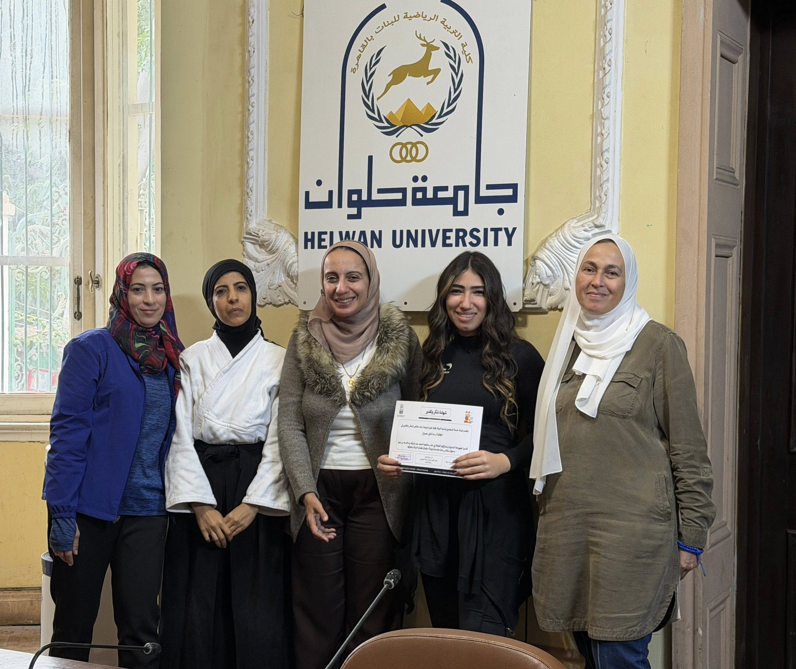
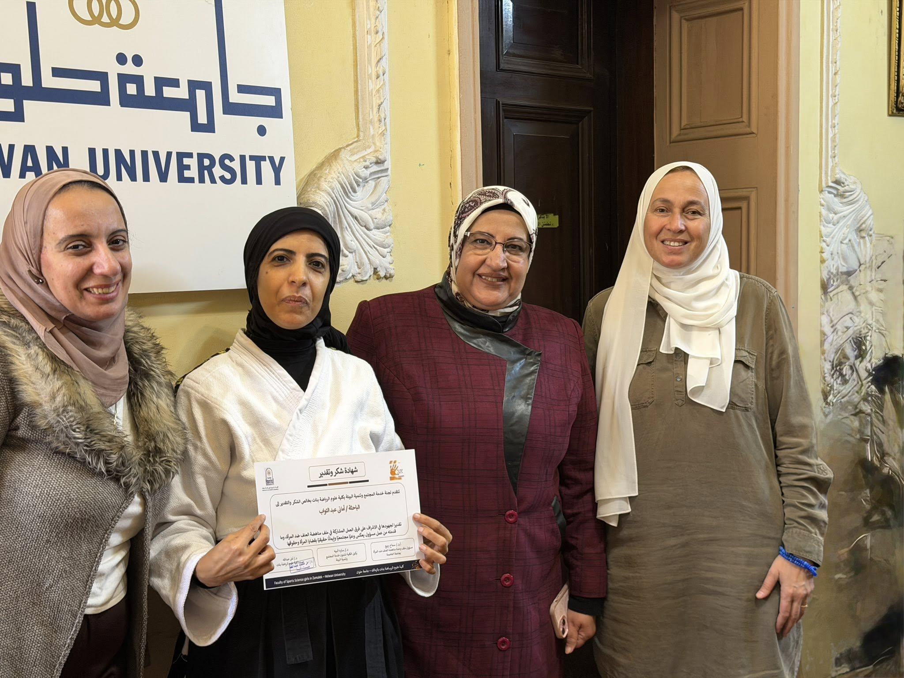

Amany Abd El-Tawab Ali
أماني عبد التواب علي
Communication Engineer | Senior Software Engineer (Java & Salesforce) • 3rd Dan Aikido Instructor & Fukushidoin
مهندسة اتصالات وبرمجيات أولى | مدربة أيكيدو 3 دان ودفاع عن النفس سيدات وأطفال
Aikido self-defense classes for women & children in Cairo
تدريب أيكيدو ودفاع عن النفس للسيدات والأطفال في القاهرة
About Me | نبذة عني
Communication Engineer and Senior Software Engineer with 10+ years of experience in Full-Stack Java and Salesforce enterprise systems, combined with the discipline of a Japanese-certified 3rd Dan (Sandan) Aikido Instructor & Fukushidoin in Cairo, Egypt. My work and published academic research bridge software technology with martial arts training to empower women's safety, self-confidence, and community leadership.
أنا أماني عبد التواب علي، مهندسة اتصالات ومهندسة برمجيات أولى بخبرة تزيد عن 10 سنوات في أنظمة Java و Salesforce للمؤسسات. كما أنني مدربة أيكيدو 3 دان معتمدة من الأيكيكاي في طوكيو، اليابان، ومقيمة في القاهرة. أتخصص في تدريب دفاع عن النفس سيدات وتدريب أيكيدو للاطفال.
Published Scientific Research | الأبحاث العلمية المنشورة
An interdisciplinary study combining core Aikido self-defense techniques (Nikyo, Sankyo, Kotegaeshi, Shiho Nage) with rapid-response mobile safety software (Life360, Get Home Safe, Najda, SOS Alert), demonstrating statistically significant improvements in women's self-confidence and personal safety readiness.
دراسة تطبيقية تجمع بين التدريب على مهارات الأيكيدو الأساسية للدفاع عن النفس (نيكيو، سانكيو، كوتي جايشي، شيهو ناجي) وتوظيف برمجيات الهواتف الذكية للطوارئ والأمان الشخصي (Life360، Get Home Safe، Najda، SOS Alert) خلال 10 ثوانٍ، وأثبتت النتائج فاعلية الدمج بين الجانب البدني والتقني في تعزيز الثقة بالنفس والوقاية من العنف ضد المرأة.
https://jphalexu.journals.ekb.eg/article_487586.html
Software Engineering
- Backend: Java, Spring Boot, REST APIs, Microservices
- Cloud CRM: Salesforce (Apex, LWC, Aura)
- Desktop & Web: JavaFX, Python (Tkinter), JS/HTML/CSS
- Databases: MongoDB, SQL
- Highlights: Technical Lead for national electricity SCADA systems; 3 years Senior Salesforce Developer for an Italian enterprise.

Aikido Instruction (Egypt) | مدربة أيكيدو
- Rank: 3rd Dan (Sandan) Black Belt – Aikikai Hombu Dojo, Tokyo, Japan
- Certification: Fukushidoin (Assistant Instructor) – Aikikai Hombu Dojo, Tokyo, Japan
- Classes in Cairo: Certified Aikido instructor for ladies (دفاع عن النفس سيدات) and youth/children (تدريب أيكيدو للاطفال)
- Credentials: Egyptian Olympic Committee foundational coaching certification & Aikikai Hombu Dojo (Tokyo) Fukushidoin certification
Classes | المجموعات
- Who: Women and children (beginners welcome) | سيدات وأطفال (للمبتدئين)
- Where: [venue name, area] | [اسم المكان والمنطقة]
- When: [days and times] | [الأيام والمواعيد]
- Join: Message me on WhatsApp using the button at the top | تواصلوا معي عبر واتساب من الزر في أعلى الصفحة
Aikido Training, Examinations & Coaching Gallery | معرض صور التدريب








Education & Languages | التعليم واللغات
B.Sc. in Electronic Engineering (Communications)
Languages: Arabic (Native), English (Professional), Italian